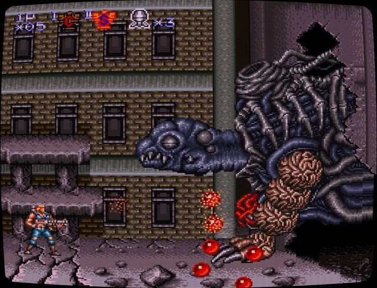
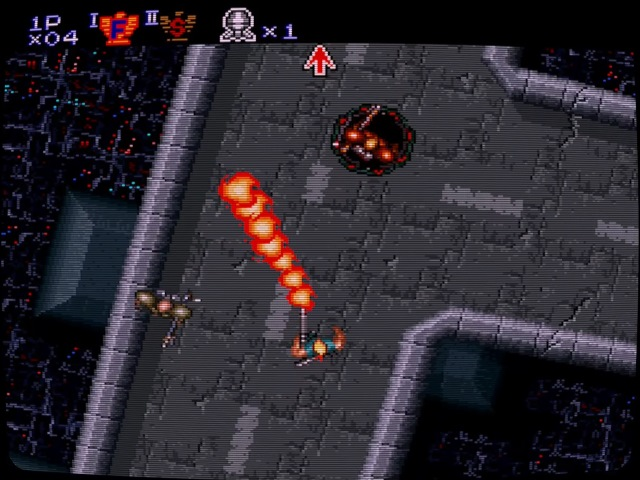
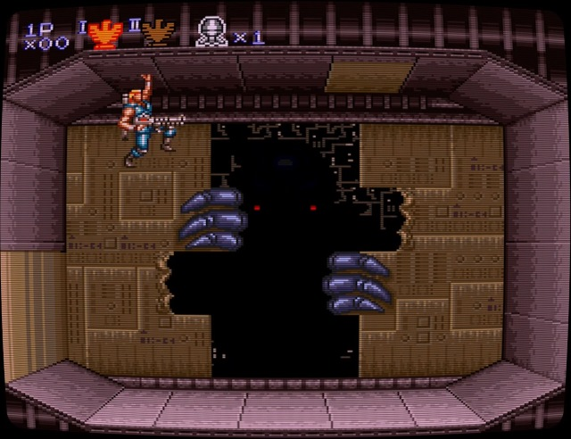

I’m excited about the SNES Classic Mini and as such I wanted to look back at each of the games included in the cute 16-bit nostalgia box to see how well they’ve aged. First up, Contra III: The Alien Wars…
Contra III: The Alien Wars or, as I knew it reading magazines before the Super Nintendo launched in the UK, its Japanese title Contra Spirits was the follow-up to the prior NES run and gun titles, Contra and Super C. It dragged the popular run and gun franchise into the 16-bit era demonstrating how much more powerful the SNES was compared to it’s outgoing 8-bit sibling. But does it hold up 25 years later?

Contra III‘s aesthetic still looks great, extending the games old 8-bit look in a logical way with a bright colour palette and fun enemy designs; especially when it comes to bosses. Konami used the extra power the new console provided to come closer to the arcade versions than was possible on the NES.
Each of the six stages has a distinct look with unique enemies as you blast your way through ready to defeat Red Falcon. The game does suffer from slowdown in quite a few areas but it doesn’t detract too much from the action. Konami used the opportunity to showcase the SNES’ Mode 7 scaling and rotation abilities with a couple of levels that took on an overhead perspective too, offering a break in the left-to-right shooty action.

Outside of the visuals, Contra III has a great soundtrack, with multiple Konami Kukeiha Club members contributing to the futuristic soundscape. It still sounds great today and really adds to the dark atmosphere.
The Alien Wars also holds true to the difficulty of the Contra series, combining some tricky platforming with enemies that shoot at the most frustrating angles. Even the Easy difficulty can prove to be a challenge until you get into the right mindset for taking on Red Falcon.

Despite the game’s difficulty it is still a lot of fun to play, especially with a friend in tow, and is probably the high point of the whole Contra series. Tight controls, some great graphics, an awesome soundtrack and that unforgettable Snatcher/Terminator inspired boss fight made coming back to this a lot of fun.
Still as strong as it was when it launched 25 years ago, Contra 3: The Alien Wars is a solid title and a good way to remind yourself that 90’s era Konami were a god-tier developer. A great addition to the SNES Mini as one of two Konami titles on the machine, I’ll be taking a look at the other, Super Castlevania IV, next time to see how that holds up.